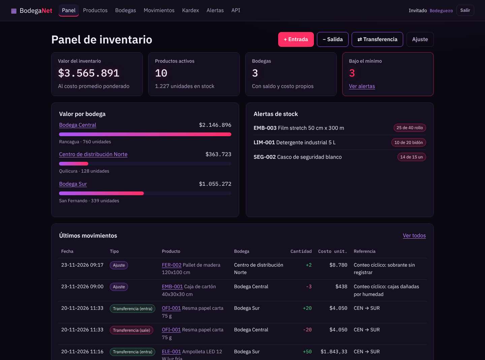

BodegaNet · Inventario y kardex en .NET
El stock nunca queda en negativo.
Controla productos en varias bodegas: entradas con costo, salidas, ajustes por conteo y transferencias, con un kardex valorizado a costo promedio ponderado.
Servidor:
Entra con el botón «Entrar como invitado». Esta página despierta la app al abrirse; cuando veas «En línea», responde al instante. Los datos son ficticios y se reinician cuando la app se apaga.

Qué puedes probar
- Registra una salida
Intenta sacar más unidades de las que hay: la app lo impide y te muestra el saldo disponible.
- Transfiere entre bodegas
La salida de una bodega y la entrada en la otra se guardan juntas o no se guarda ninguna.
- Revisa el kardex
Elige un producto y una bodega: cada entrada recalcula el costo promedio y puedes exportarlo a CSV.
Cómo se implementa
C# · ASP.NET Core · EF Core · PostgreSQL
La interfaz usa Razor Pages renderizadas en el servidor y la misma lógica se expone como API REST documentada con OpenAPI. Entity Framework Core persiste en PostgreSQL con migraciones (o SQLite en la demo pública). Cada saldo tiene un token de concurrencia optimista: si dos salidas compiten, una se reintenta dentro de la transacción y, si ya no hay stock, se rechaza; la base además tiene su propia restricción. Hay roles (Administrador, Bodeguero, Consulta) y 34 pruebas con xUnit, incluida una que lanza 10 salidas simultáneas. Ver el código.